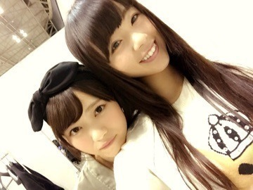
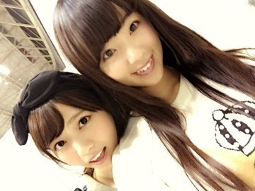
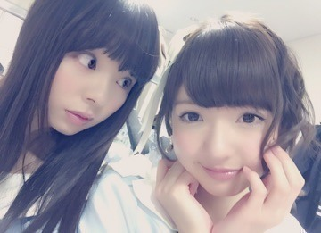
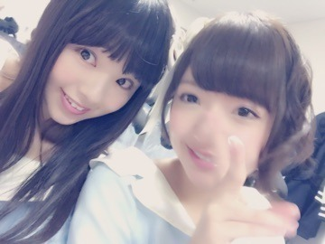
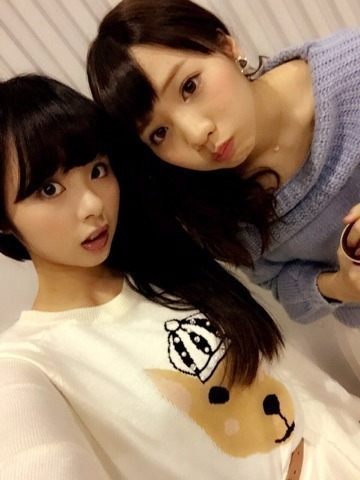
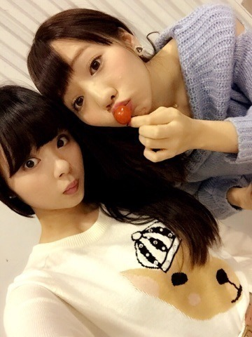
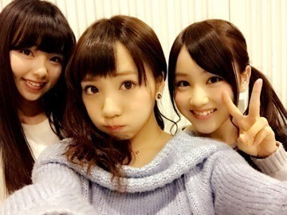

| 2015/01 26 Mon | 川村真洋 All LIVE NIPPON後、急い でリクエストアワー に移動！！！！！ まに。Rotty |
こんにちわ＠ 'ェ' ＠❤️
皆 おつかれさま。
最近なんだか とっても楽しく生きてます。
だからなのか，独り言が一段と多くなりました，まにです。
大阪姉妹 なあまに。(さゆりんどこ❤️)

(さゆりんどこ❤️？)笑

皆さん，のぎ天『文芸サークル』
私が監督をした作品見てくれたかな？？？
blogコメントや755ヤジコメに 沢山の有り難きお言葉ありがとう！！！
ゆうりに「今から泣いて」
北野に「笑顔はもう撮ったから次は笑わないで」←簡単な事だけど笑顔がトレードマークの北野にとっては簡単じゃなかったりする。笑
ちなみにじゅうたんの上で横たわるシーンは，ドラマ「14歳の母」をイメージしました。 伝わるかな(⌒-⌒; )？
だとかメンバーのいいショットを撮りたくて撮りたくて色々注文しちゃって、結果いいのが取れたから良かった！！
まあやも，まひろの大好きな愛おしい顔と綺麗な足が撮れたので満足（＾ω＾）
他にもまひろ・ゆうり・まあや・北野の普段見れないショットも見れるので是非！ まだ見ていない方も今からCheckしてくださ～い。
そしてそして。じゃーん。

衣装ほとんど見えてない。

AKB48リクエストアワーのステージに立ってきました(*^_^*)
こじ坂『風の螺旋』が54位に！！！
本当にありがとうございました。
皆さんのおかげです。
それに！！！
リクアワに移動する前には 『All LIVE NIPPON』で，私達アンダーメンバーで8曲もやらせて頂きましたヾ(＠⌒ー⌒＠)ノ
おいでシャンプー
ガールズルール
制服のマネキン
君の名は希望
MC
自由の彼方
あの日 僕は咄嗟に嘘をついた
生まれたままで
夏のFree＆Easy
何度目の青空か？ です♩♩♩
このLIVEは沢山のアーティストが出演するので，乃木坂以外を観に来る方も沢山いました。
でも！本当に皆さん優しくて すっっごい笑顔で手を振ってくださったりして，本当に嬉しかったです！！！
ありがとうございます❤️
全曲披露した後に，大皿にメンバー分のお寿司が並べてあって，1個ずつ手に取って「いっせーのせ」で食べて，３つだけワサビ大量やから ワサビ寿司だった人が、この後のMCに出てもらう的なのりやったんですよ～、、、
でね～ ワサビやったのがね，
私とらりんとまあや。笑
めっちゃ苦かったです（ ｉ _ ｉ ）
用意してくれたお茶，まさかのセンブリ茶。。。
意味わからないです
とにかく苦かった。
MCどころか もがき苦しんで終わりましたよ。
結果楽しかったんですけどねヾ(＠⌒ー⌒＠)ノ
裏話で言うと、リハーサルの時に
私・らりん・ゆうりに当たりそうやない？的なのりになってまして， それで本番 私・らりん・まあやだったってゆう，割りかし当たってたみたいなね❤️笑
楽しい1日でしたヾ(＠⌒ー⌒＠)ノ
顔が似ていると言われる，まにあみ。

改めてこの服好き。 ぁ，トマトおる。

ぁ，みなみも。

今日も1日ポジティブに！
悔いのないように！
楽しく気楽にね～❤️
のし。